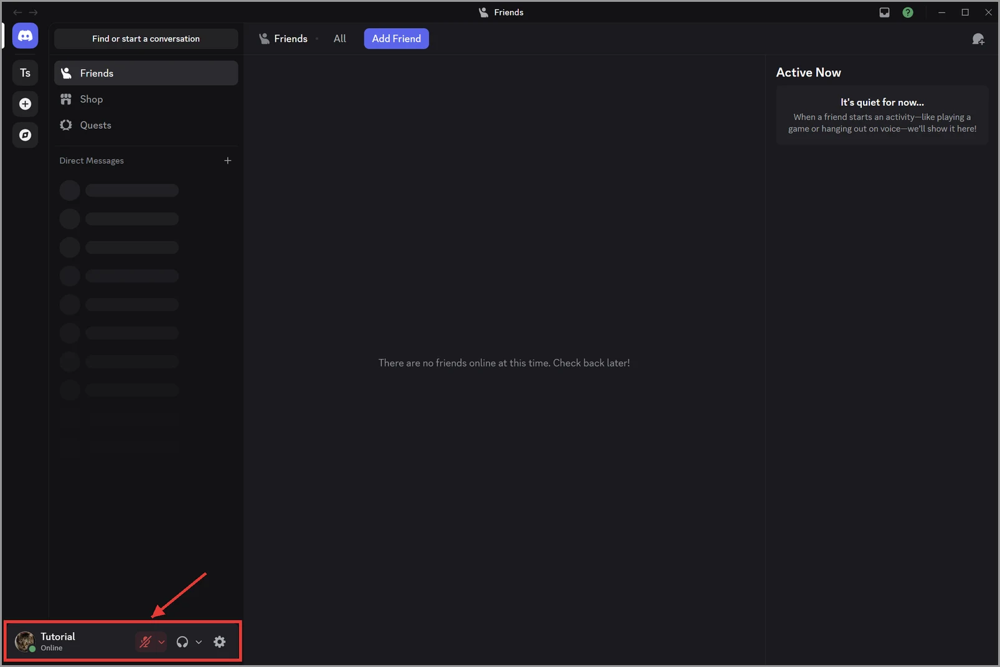
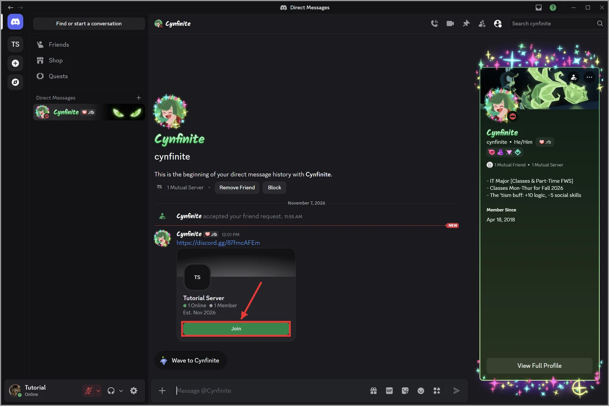
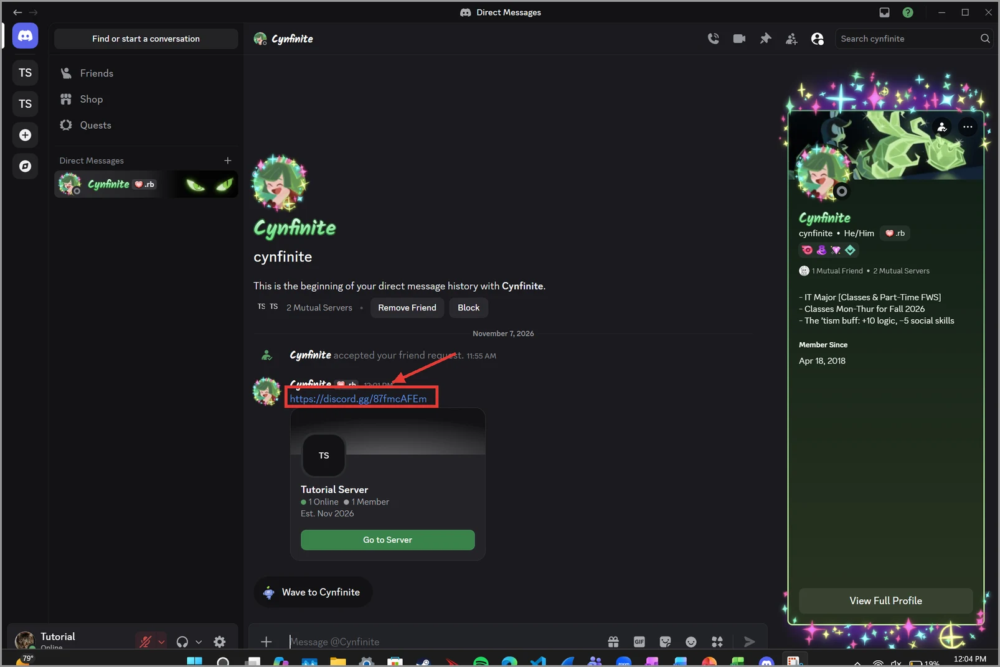
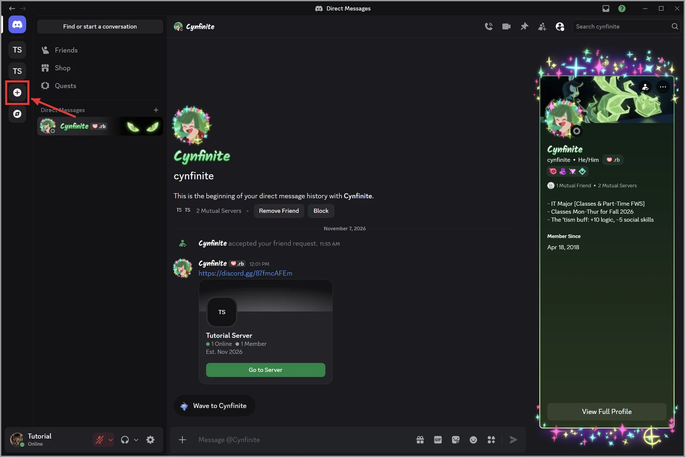
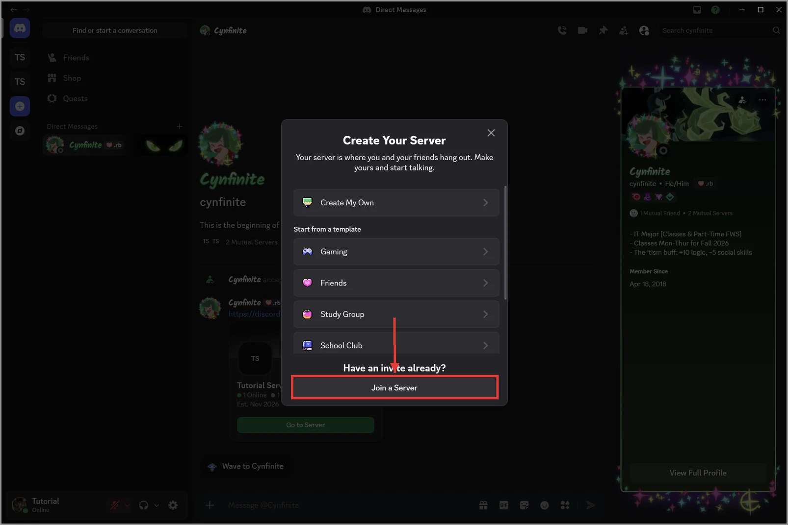
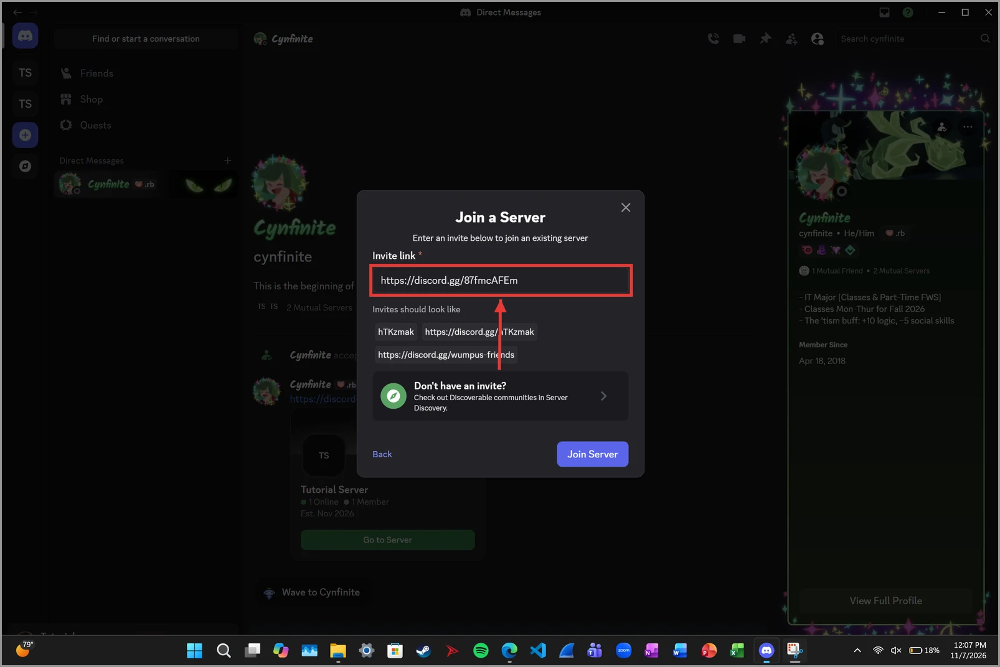
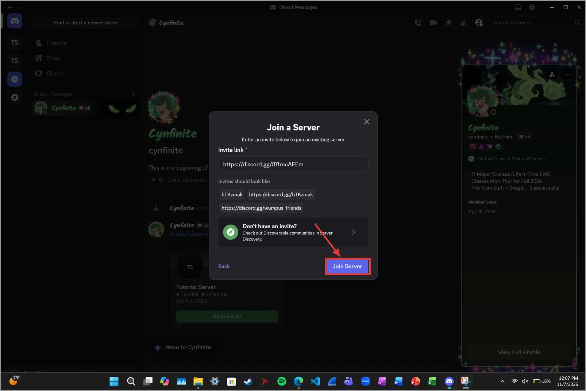

3.2 Accepting an Invite Link
Groups invite new members by sending an invite link, usually by email, text message, or a Canvas message. The link looks like discord.gg/ followed by a short code.
Join by clicking the link
- Make sure you are logged in to the Discord desktop app.

Figure 3.2.1: The user panel at the bottom-left, which shows you are logged in - Click the Join button on the invite link your group sent.

Figure 3.2.2: The Join button on an invite link
Result: Discord opens to the new server, and its icon appears in the column on the far left.
Join by pasting the link
If clicking the link does not open the server, paste the link into Discord yourself.
- Copy the invite link from the email or message.

Figure 3.2.3: An invite link in a message - In Discord, click the plus button (Add a Server) near the bottom of the round server icons on the far left.

Figure 3.2.4: The plus button (Add a Server) in the server column - At the bottom of the window that opens, click Join a Server.

Figure 3.2.5: The Join a Server button at the bottom of the Create Your Server window - Paste the link into the Invite Link box.

Figure 3.2.6: Pasting the link into the Invite Link box - Click Join Server.

Figure 3.2.7: The Join Server button
Result: The new server opens, and its icon appears in the server column on the far left. Subsection 4.1 explains this column, called the server list.